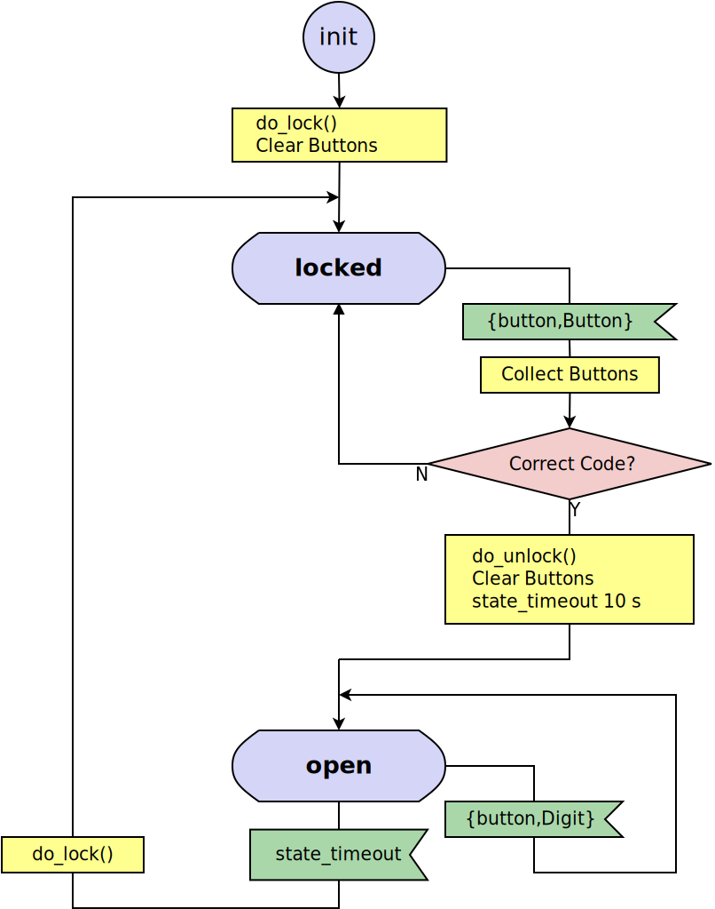

gen_statem Behavior
This section is to be read with the stdlib/gen_statem manual page in STDLIB, where all interface functions and callback functions are described in detail. Event-Driven State Machines
Event-Driven State Machines
Established Automata Theory does not deal much with how a state transition is triggered, but assumes that the output is a function of the input (and the state) and that they are some kind of values.
For an Event-Driven State Machine, the input is an event that triggers a state transition and the output is actions executed during the state transition . It can analogously to the mathematical model of a Finite State Machine be described as a set of relations of the following form:
State(S) x Event(E) -> Actions(A), State(S')
These relations are interpreted as follows: if we are in state S and event E occurs, we are to perform actions A and make a transition to state S' . Notice that S' can be equal to S and that A can be empty.
In gen_statem we define a state change as a state transition in which the new state S' is different from the current state S , where "different" means Erlang's strict inequality: =/= also know as "does not match". During a state changes , gen_statem does more things than during other state transitions .
As A and S' depend only on S and E , the kind of state machine described here is a Mealy machine (see, for example, the Wikipedia article "Mealy machine").
Like most gen_ behaviors, gen_statem keeps a server Data besides the state. Because of this, and as there is no restriction on the number of states (assuming that there is enough virtual machine memory) or on the number of distinct input events, a state machine implemented with this behavior is in fact Turing complete. But it feels mostly like an Event-Driven Mealy machine. When to use gen_statem
When to use gen_statem
If your process logic is convenient to describe as a state machine, and you want any of these gen_statem key features:
- Co-located callback code for each state, for all Event Types (such as call , cast and info )
- Postponing Events (a substitute for selective receive)
- Inserted Events that is: events from the state machine to itself (in particular purely internal events)
- State Enter Calls (callback on state entry co-located with the rest of each state's callback code)
- Easy-to-use time-outs ( State Time-Outs , Event Time-Outs and Generic Time-outs (named time-outs))
If so, or if possibly needed in future versions, then you should consider using gen_statem over stdlib/gen_server .
For simple state machines not needing these features stdlib/gen_server works just fine. It also has got smaller call overhead, but we are talking about something like 2 vs 3.3 microseconds call roundtrip time here, so if the server callback does just a little bit more than just replying, or if the call is not extremely frequent, that difference will be hard to notice. Callback Module
Callback Module
The callback module contains functions that implement the state machine. When an event occurs, the gen_statem behaviour engine calls a function in the callback module with the event, current state and server data. This function performs the actions for this event, and returns the new state and server data and also actions to be performed by the behaviour engine.
The behaviour engine holds the state machine state, server data, timer references, a queue of posponed messages and other metadata. It receives all process messages, handles the system messages, and calls the callback module with machine specific events. Callback Modes
Callback Modes
The gen_statem behavior supports two callback modes :
- stdlib/gen_statem#type-callback_mode
- Events are handled by one callback function per state.
- stdlib/gen_statem#type-callback_mode
- Events are handled by one single callback function.
See the section State Callback that describes the event handling callback function(s).
The callback mode is selected by implementing a mandatory callback function stdlib/gen_statem#Module:callback_mode/0 that returns one of the callback modes .
The stdlib/gen_statem#Module:callback_mode/0 function may also return a list containing the callback mode and the atom state_enter in which case State Enter Calls are activated for the callback mode . Choosing the Callback Mode
Choosing the Callback Mode
The short version: choose state_functions - it is the one most like gen_fsm . But if you do not want the restriction that the state must be an atom, or if you do not want to write one state callback function per state; please read on...
The two Callback Modes give different possibilities and restrictions, with one common goal: to handle all possible combinations of events and states.
This can be done, for example, by focusing on one state at the time and for every state ensure that all events are handled. Alternatively, you can focus on one event at the time and ensure that it is handled in every state. You can also use a mix of these strategies.
With state_functions , you are restricted to use atom-only states, and the gen_statem engine branches depending on state name for you. This encourages the callback module to co-locate the implementation of all event actions particular to one state in the same place in the code, hence to focus on one state at the time.
This mode fits well when you have a regular state diagram, like the ones in this chapter, which describes all events and actions belonging to a state visually around that state, and each state has its unique name.
With handle_event_function , you are free to mix strategies, as all events and states are handled in the same callback function.
This mode works equally well when you want to focus on one event at the time or on one state at the time, but function stdlib/gen_statem#Module:handle_event/4 quickly grows too large to handle without branching to helper functions.
The mode enables the use of non-atom states, for example, complex states or even hierarchical states. See section Complex State . If, for example, a state diagram is largely alike for the client side and the server side of a protocol, you can have a state {StateName,server} or {StateName,client} , and make StateName determine where in the code to handle most events in the state. The second element of the tuple is then used to select whether to handle special client-side or server-side events. State Callback
State Callback
The state callback is the callback function that handles an event in the current state, and which function that is depends on the callback mode :
- state_functions
- The event is handled by: stdlib/gen_statem#Module:StateName/3 This form is the one mostly used in the Example section.
- handle_event_function
- The event is handled by: stdlib/gen_statem#Module:handle_event/4 See section One State Callback for an example.
State enter calls are also handled by the event handler and have slightly different arguments. See section State Enter Calls .
The state callback return values are defined in the description of stdlib/gen_statem#Module:StateName/3 in the gen_statem manual page, but here is a more readable list:
- {next_state, NextState, NewData, Actions} {next_state, NextState, NewData}
- Set next state and update the server data. If the Actions field is used, execute transition actions . An empty Actions list is equivalent to not returning the field. See section Transition Actions for a list of possible transition actions . If NextState =/= State this is a state change so the extra things gen_statem does are: the event queue is restarted from the oldest postponed event , any current state time-out is cancelled, and a state enter call is performed, if enabled.
- {keep_state, NewData, Actions} {keep_state, NewData}
- Same as the next_state values with NextState =:= State , that is, no state change .
- {keep_state_and_data, Actions} keep_state_and_data
- Same as the keep_state values with NextData =:= Data , that is, no change in server data.
- {repeat_state, NewData, Actions} {repeat_state, NewData} {repeat_state_and_data, Actions} repeat_state_and_data
- Same as the keep_state or keep_state_and_data values, and if State Enter Calls are enabled, repeat the state enter call as if this state was entered again. If these return values are used from a state enter call the OldState does not change, but if used from an event handling state callback the new state enter call's OldState will be the current state.
- {stop, Reason, NewData} {stop, Reason}
- Stop the server with reason Reason . If the NewData field is used, first update the server data.
- {stop_and_reply, Reason, NewData, ReplyActions} {stop_and_reply, Reason, ReplyActions}
- Same as the stop values, but first execute the given Transition Actions that may only be reply actions.
The First State
To decide the first state the stdlib/gen_statem#Module:init/1 callback function is called before any State Callback is called. This function behaves like an state callback function, but gets its only argument Args from the gen_statem stdlib/gen_statem#start/3 or stdlib/gen_statem#start_link/3 function, and returns {ok, State, Data} or {ok, State, Data, Actions} . If you use the Postponing Events action from this function, that action is ignored, since there is no event to postpone. Transition Actions
Transition Actions
In the first section Event-Driven State Machines actions were mentioned as a part of the general state machine model. These general actions are implemented with the code that callback module gen_statem executes in an event-handling callback function before returning to the gen_statem engine.
There are more specific transition actions that a callback function can command the gen_statem engine to do after the callback function return. These are commanded by returning a list of actions in the return value from the callback function . These are the possible transition actions :
- stdlib/gen_statem#type-postpone {postpone, Boolean}
- If set postpone the current event, see section Postponing Events .
- stdlib/gen_statem#type-hibernate {hibernate, Boolean}
- If set hibernate the gen_statem , treated in section Hibernation .
- stdlib/gen_statem#type-state_timeout {state_timeout, EventContent, Time, Opts}
- Start a state time-out, read more in sections Time-Outs and State Time-Outs .
- stdlib/gen_statem#type-generic_timeout {{timeout, Name}, EventContent, Time, Opts}
- Start a generic time-out, read more in sections Time-Outs and Generic Time-Outs .
- stdlib/gen_statem#type-event_timeout {timeout, EventContent, Time, Opts} Time
- Start an event time-out, see more in sections Time-Outs and Event Time-Outs .
- stdlib/gen_statem#type-reply_action
- Reply to a caller, mentioned at the end of section All State Events .
- stdlib/gen_statem#type-action
- Generate the next event to handle, see section Inserted Events .
Event Types
Events are categorized in different stdlib/gen_statem#type-event_type . Events of all types are for a given state handled in the same callback function, and that function gets EventType and EventContent as arguments.
The following is a complete list of event types and where they come from:
- stdlib/gen_statem#type-external_event_type
- Generated by stdlib/gen_statem#cast/2 .
- stdlib/gen_statem#type-external_event_type
- Generated by stdlib/gen_statem#call/2 , where From is the reply address to use when replying either through the transition action {reply,From,Msg} or by calling stdlib/gen_statem#reply/1 .
- stdlib/gen_statem#type-external_event_type
- Generated by any regular process message sent to the gen_statem process.
- stdlib/gen_statem#type-timeout_event_type
- Generated by transition action stdlib/gen_statem#type-timeout_action state timer timing out. Read more in sections Time-Outs and State Time-Outs .
- stdlib/gen_statem#type-timeout_event_type
- Generated by transition action stdlib/gen_statem#type-timeout_action generic timer timing out. Read more in sections Time-Outs and Generic Time-Outs .
- stdlib/gen_statem#type-timeout_event_type
- Generated by transition action stdlib/gen_statem#type-timeout_action (or its short form Time ) event timer timing out. Read more in sections Time-Outs and Event Time-Outs .
- stdlib/gen_statem#type-event_type
- Generated by transition action stdlib/gen_statem#type-enter_action . All event types above can also be generated using the next_event action: {next_event,EventType,EventContent} .
State Enter Calls
The gen_statem behavior can if this is enabled, regardless of callback mode , automatically call the state callback with special arguments whenever the state changes so you can write state enter actions near the rest of the state transition rules. It typically looks like this:
StateName(enter, OldState, Data) ->
... code for state enter actions here ...
{keep_state, NewData};
StateName(EventType, EventContent, Data) ->
... code for actions here ...
{next_state, NewStateName, NewData}.
Since the state enter call is not an event there are restrictions on the allowed return value and State Transition Actions . You may not change the state, postpone this non-event, or insert any events .
The first state that is entered will get a state enter call with OldState equal to the current state.
You may repeat the state enter call using the {repeat_state,...} return value from the state callback . In this case OldState will also be equal to the current state.
Depending on how your state machine is specified, this can be a very useful feature, but it forces you to handle the state enter calls in all states. See also the State Enter Actions section. Time-Outs
Time-outs
Time-outs in gen_statem are started from a Transition Actions during a state transition that is when exiting from the State Callback .
There are 3 types of time-outs in gen_statem :
- stdlib/gen_statem#type-state_timeout
- There is one State Time-Out that is automatically cancelled by a state change .
- stdlib/gen_statem#type-generic_timeout
- There are any number of Generic Time-Outs differing by their Name . They have no automatic cancelling.
- stdlib/gen_statem#type-event_timeout
- There is one Event Time-Out that is automatically cancelled by any event. Note that postponed and inserted events cancel this timeout just as external events.
All time-outs has got an EventContent that is part of the Transition Actions that starts the time-out. Different EventContent s does not create different time-outs. The EventContent is delivered to the State Callback when the time-out expires. Cancelling a Time-Out
Cancelling a Time-Out
If a time-out is started with the time infinity it will never time out, in fact it will not even be started, and any running time-out with the same tag will be cancelled. The EventContent will in this case be ignored, so why not set it to undefined . Time-Out Zero
Time-Out Zero
If a time-out is started with the time 0 it will actually not be started. Instead the time-out event will immediately be inserted to be processed after any events already enqueued, and before any not yet received external events. Note that some time-outs are automatically cancelled so if you for example combine postponing an event in a state change with starting an event time-out with time 0 there will be no timeout event inserted since the event time-out is cancelled by the postponed event that is delivered due to the state change. Example
Example
A door with a code lock can be seen as a state machine. Initially, the door is locked. When someone presses a button, an event is generated. The pressed buttons are collected, up to the number of buttons in the correct code. If correct, the door is unlocked for 10 seconds. If not correct, we wait for a new button to be pressed.  This code lock state machine can be implemented using gen_statem with the following callback module :
-module(code_lock).
-behaviour(gen_statem).
-define(NAME, code_lock).
-export([start_link/1]).
-export([button/1]).
-export([init/1,callback_mode/0,terminate/3]).
-export([locked/3,open/3]).
start_link(Code) ->
gen_statem:start_link({local,?NAME}, ?MODULE, Code, []).
button(Button) ->
gen_statem:cast(?NAME, {button,Button}).
init(Code) ->
do_lock(),
Data = #{code => Code, length => length(Code), buttons => []},
{ok, locked, Data}.
callback_mode() ->
state_functions.
locked(
cast, {button,Button},
#{code := Code, length := Length, buttons := Buttons} = Data) ->
NewButtons =
if
length(Buttons) < Length ->
Buttons;
true ->
tl(Buttons)
end ++ [Button],
if
NewButtons =:= Code -> % Correct
do_unlock(),
{next_state, open, Data#{buttons := []},
[{state_timeout,10000,lock}]}; % Time in milliseconds
true -> % Incomplete | Incorrect
{next_state, locked, Data#{buttons := NewButtons}}
end.
open(state_timeout, lock, Data) ->
do_lock(),
{next_state, locked, Data};
open(cast, {button,_}, Data) ->
{next_state, open, Data}.
do_lock() ->
io:format("Lock~n", []).
do_unlock() ->
io:format("Unlock~n", []).
terminate(_Reason, State, _Data) ->
State =/= locked andalso do_lock(),
ok.
The code is explained in the next sections. Starting gen_statem
Starting gen_statem
In the example in the previous section, gen_statem is started by calling code_lock:start_link(Code) :
start_link(Code) ->
gen_statem:start_link({local,?NAME}, ?MODULE, Code, []).
start_link calls function stdlib/gen_statem#start_link/4 , which spawns and links to a new process, a gen_statem .
- The first argument, {local,?NAME} , specifies the name. In this case, the gen_statem is locally registered as code_lock through the macro ?NAME .
If the name is omitted, the gen_statem is not registered. Instead its pid must be used. The name can also be specified as {global,Name} , then the gen_statem is registered using kernel/global#register_name/2 in Kernel. * The second argument, ?MODULE , is the name of the callback module , that is, the module where the callback functions are located, which is this module.
The interface functions ( start_link/1 and button/1 ) are located in the same module as the callback functions ( init/1 , locked/3 , and open/3 ). It is normally good programming practice to have the client-side code and the server-side code contained in one module. * The third argument, Code , is a list of digits, which is the correct unlock code that is passed to callback function init/1 . * The fourth argument, [] , is a list of options. For the available options, see stdlib/gen_statem#start_link/3 .
If name registration succeeds, the new gen_statem process calls callback function code_lock:init(Code) . This function is expected to return {ok, State, Data} , where State is the initial state of the gen_statem , in this case locked ; assuming that the door is locked to begin with. Data is the internal server data of the gen_statem . Here the server data is a map with key code that stores the correct button sequence, key length store its length, and key buttons that stores the collected buttons up to the same length.
init(Code) ->
do_lock(),
Data = #{code => Code, length => length(Code), buttons => []},
{ok, locked, Data}.
Function stdlib/gen_statem#start_link/3 is synchronous. It does not return until the gen_statem is initialized and is ready to receive events.
Function stdlib/gen_statem#start_link/3 must be used if the gen_statem is part of a supervision tree, that is, started by a supervisor. Another function, stdlib/gen_statem#start/3 can be used to start a standalone gen_statem , that is, a gen_statem that is not part of a supervision tree.
Function stdlib/gen_statem#Module:callback_mode/0 selects the Callback Modes for the callback module , in this case stdlib/gen_statem#type-callback_mode . That is, each state has got its own handler function:
callback_mode() ->
state_functions.
Handling Events
The function notifying the code lock about a button event is implemented using stdlib/gen_statem#cast/2 :
button(Button) ->
gen_statem:cast(?NAME, {button,Button}).
The first argument is the name of the gen_statem and must agree with the name used to start it. So, we use the same macro ?NAME as when starting. {button,Button} is the event content.
The event is sent to the gen_statem . When the event is received, the gen_statem calls StateName(cast, Event, Data) , which is expected to return a tuple {next_state, NewStateName, NewData} , or {next_state, NewStateName, NewData, Actions} . StateName is the name of the current state and NewStateName is the name of the next state to go to. NewData is a new value for the server data of the gen_statem , and Actions is a list of actions to be performed by the gen_statem engine.
locked(
cast, {button,Button},
#{code := Code, length := Length, buttons := Buttons} = Data) ->
NewButtons =
if
length(Buttons) < Length ->
Buttons;
true ->
tl(Buttons)
end ++ [Button],
if
NewButtons =:= Code -> % Correct
do_unlock(),
{next_state, open, Data#{buttons := []},
[{state_timeout,10000,lock}]}; % Time in milliseconds
true -> % Incomplete | Incorrect
{next_state, locked, Data#{buttons := NewButtons}}
end.
In state locked , when a button is pressed, it is collected with the last pressed buttons up to the length of the correct code, and compared with the correct code. Depending on the result, the door is either unlocked and the gen_statem goes to state open , or the door remains in state locked .
When changing to state open , the collected buttons are reset, the lock unlocked, and a state timer for 10 s is started.
open(cast, {button,_}, Data) ->
{next_state, open, Data}.
In state open , a button event is ignored by staying in the same state. This can also be done by returning {keep_state, Data} or in this case since Data unchanged even by returning keep_state_and_data . State Time-Outs
State Time-Outs
When a correct code has been given, the door is unlocked and the following tuple is returned from locked/2 :
{next_state, open, Data#{buttons := []},
[{state_timeout,10000,lock}]}; % Time in milliseconds
10,000 is a time-out value in milliseconds. After this time (10 seconds), a time-out occurs. Then, StateName(state_timeout, lock, Data) is called. The time-out occurs when the door has been in state open for 10 seconds. After that the door is locked again:
open(state_timeout, lock, Data) ->
do_lock(),
{next_state, locked, Data};
The timer for a state time-out is automatically cancelled when the state machine does a state change . You can restart a state time-out by setting it to a new time, which cancels the running timer and starts a new. This implies that you can cancel a state time-out by restarting it with time infinity . All State Events
All State Events
Sometimes events can arrive in any state of the gen_statem . It is convenient to handle these in a common state handler function that all state functions call for events not specific to the state.
Consider a code_length/0 function that returns the length of the correct code. We dispatch all events that are not state-specific to the common function handle_common/3 :
...
-export([button/1,code_length/0]).
...
code_length() ->
gen_statem:call(?NAME, code_length).
...
locked(...) -> ... ;
locked(EventType, EventContent, Data) ->
handle_common(EventType, EventContent, Data).
...
open(...) -> ... ;
open(EventType, EventContent, Data) ->
handle_common(EventType, EventContent, Data).
handle_common({call,From}, code_length, #{code := Code} = Data) ->
{keep_state, Data,
[{reply,From,length(Code)}]}.
Another way to do it is through a convenience macro ?HANDLE_COMMON/0 :
...
-export([button/1,code_length/0]).
...
code_length() ->
gen_statem:call(?NAME, code_length).
-define(HANDLE_COMMON,
?FUNCTION_NAME(T, C, D) -> handle_common(T, C, D)).
%%
handle_common({call,From}, code_length, #{code := Code} = Data) ->
{keep_state, Data,
[{reply,From,length(Code)}]}.
...
locked(...) -> ... ;
?HANDLE_COMMON.
...
open(...) -> ... ;
?HANDLE_COMMON.
This example uses stdlib/gen_statem#call/2 , which waits for a reply from the server. The reply is sent with a {reply,From,Reply} tuple in an action list in the {keep_state, ...} tuple that retains the current state. This return form is convenient when you want to stay in the current state but do not know or care about what it is.
If the common state callback needs to know the current state a function handle_common/4 can be used instead:
-define(HANDLE_COMMON,
?FUNCTION_NAME(T, C, D) -> handle_common(T, C, ?FUNCTION_NAME, D)).
One State Callback
If Callback Modes handle_event_function is used, all events are handled in stdlib/gen_statem#Module:handle_event/4 and we can (but do not have to) use an event-centered approach where we first branch depending on event and then depending on state:
...
-export([handle_event/4]).
...
callback_mode() ->
handle_event_function.
handle_event(cast, {button,Button}, State, #{code := Code} = Data) ->
case State of
locked ->
#{length := Length, buttons := Buttons} = Data,
NewButtons =
if
length(Buttons) < Length ->
Buttons;
true ->
tl(Buttons)
end ++ [Button],
if
NewButtons =:= Code -> % Correct
do_unlock(),
{next_state, open, Data#{buttons := []},
[{state_timeout,10000,lock}]}; % Time in milliseconds
true -> % Incomplete | Incorrect
{keep_state, Data#{buttons := NewButtons}}
end;
open ->
keep_state_and_data
end;
handle_event(state_timeout, lock, open, Data) ->
do_lock(),
{next_state, locked, Data};
handle_event(
{call,From}, code_length, _State, #{code := Code} = Data) ->
{keep_state, Data,
[{reply,From,length(Code)}]}.
...
Stopping
In a Supervision Tree
If the gen_statem is part of a supervision tree, no stop function is needed. The gen_statem is automatically terminated by its supervisor. Exactly how this is done is defined by a shutdown strategy set in the supervisor.
If it is necessary to clean up before termination, the shutdown strategy must be a time-out value and the gen_statem must in function init/1 set itself to trap exit signals by calling erts/erlang#process_flag/2 :
init(Args) ->
process_flag(trap_exit, true),
do_lock(),
...
When ordered to shut down, the gen_statem then calls callback function terminate(shutdown, State, Data) .
In this example, function terminate/3 locks the door if it is open, so we do not accidentally leave the door open when the supervision tree terminates:
terminate(_Reason, State, _Data) ->
State =/= locked andalso do_lock(),
ok.
Standalone gen_statem
If the gen_statem is not part of a supervision tree, it can be stopped using stdlib/gen_statem#stop/1 , preferably through an API function:
...
-export([start_link/1,stop/0]).
...
stop() ->
gen_statem:stop(?NAME).
This makes the gen_statem call callback function terminate/3 just like for a supervised server and waits for the process to terminate. Event Time-Outs
Event Time-Outs
A time-out feature inherited from gen_statem 's predecessor stdlib/gen_fsm , is an event time-out, that is, if an event arrives the timer is cancelled. You get either an event or a time-out, but not both.
It is ordered by the Transition Actions {timeout,Time,EventContent} , or just an integer Time , even without the enclosing actions list (the latter is a form inherited from gen_fsm .
This type of time-out is useful for example to act on inactivity. Let us restart the code sequence if no button is pressed for say 30 seconds:
...
locked(timeout, _, Data) ->
{next_state, locked, Data#{buttons := []}};
locked(
cast, {button,Button},
#{code := Code, length := Length, buttons := Buttons} = Data) ->
...
true -> % Incomplete | Incorrect
{next_state, locked, Data#{buttons := NewButtons},
30000} % Time in milliseconds
...
Whenever we receive a button event we start an event time-out of 30 seconds, and if we get an event type of timeout we reset the remaining code sequence.
An event time-out is cancelled by any other event so you either get some other event or the time-out event. It is therefore not possible nor needed to cancel or restart an event time-out. Whatever event you act on has already cancelled the event time-out...
Note that an event time-out does not work well with when you have for example a status call as in section All State Events , or handle unknown events, since all kinds of events will cancel the event time-out. Generic Time-Outs
Generic Time-Outs
The previous example of state time-outs only work if the state machine stays in the same state during the time-out time. And event time-outs only work if no disturbing unrelated events occur.
You may want to start a timer in one state and respond to the time-out in another, maybe cancel the time-out without changing states, or perhaps run multiple time-outs in parallel. All this can be accomplished with generic time-outs . They may look a little bit like event time-outs but contain a name to allow for any number of them simultaneously and they are not automatically cancelled.
Here is how to accomplish the state time-out in the previous example by instead using a generic time-out named for example open :
...
locked(
cast, {button,Button},
#{code := Code, length := Length, buttons := Buttons} = Data) ->
...
if
NewButtons =:= Code -> % Correct
do_unlock(),
{next_state, open, Data#{buttons := []},
[{{timeout,open},10000,lock}]}; % Time in milliseconds
...
open({timeout,open}, lock, Data) ->
do_lock(),
{next_state,locked,Data};
open(cast, {button,_}, Data) ->
{keep_state,Data};
...
Specific generic time-outs can just as state time-outs be restarted or cancelled by setting it to a new time or infinity .
In this particular case we do not need to cancel the time-out since the time-out event is the only possible reason to do a state change from open to locked .
Instead of bothering with when to cancel a time-out, a late time-out event can be handled by ignoring it if it arrives in a state where it is known to be late. Erlang Timers
Erlang Timers
The most versatile way to handle time-outs is to use Erlang Timers; see erts/erlang#start_timer/4 . Most time-out tasks can be performed with the time-out features in gen_statem , but an example of one that cannot is if you should need the return value from erts/erlang#cancel_timer/2 , that is; the remaining time of the timer.
Here is how to accomplish the state time-out in the previous example by instead using an Erlang Timer:
...
locked(
cast, {button,Button},
#{code := Code, length := Length, buttons := Buttons} = Data) ->
...
if
NewButtons =:= Code -> % Correct
do_unlock(),
Tref =
erlang:start_timer(
10000, self(), lock), % Time in milliseconds
{next_state, open, Data#{buttons := [], timer => Tref}};
...
open(info, {timeout,Tref,lock}, #{timer := Tref} = Data) ->
do_lock(),
{next_state,locked,maps:remove(timer, Data)};
open(cast, {button,_}, Data) ->
{keep_state,Data};
...
Removing the timer key from the map when we do a state change to locked is not strictly necessary since we can only get into state open with an updated timer map value. But it can be nice to not have outdated values in the state Data !
If you need to cancel a timer because of some other event, you can use erts/erlang#cancel_timer/2 . Note that a time-out message cannot arrive after this, unless you have postponed it before (see the next section), so ensure that you do not accidentally postpone such messages. Also note that a time-out message may have arrived just before you cancelling it, so you may have to read out such a message from the process mailbox depending on the return value from erts/erlang#cancel_timer/2 .
Another way to handle a late time-out can be to not cancel it, but to ignore it if it arrives in a state where it is known to be late. Postponing Events
Postponing Events
If you want to ignore a particular event in the current state and handle it in a future state, you can postpone the event. A postponed event is retried after a state change , that is, OldState =/= NewState .
Postponing is ordered by the Transition Actions postpone .
In this example, instead of ignoring button events while in the open state, we can postpone them and they are queued and later handled in the locked state:
...
open(cast, {button,_}, Data) ->
{keep_state,Data,[postpone]};
...
Since a postponed event is only retried after a state change , you have to think about where to keep a state data item. You can keep it in the server Data or in the State itself, for example by having two more or less identical states to keep a boolean value, or by using a complex state (see section Complex State ) with Callback Modes stdlib/gen_statem#type-callback_mode . If a change in the value changes the set of events that is handled, then the value should be kept in the State. Otherwise no postponed events will be retried since only the server Data changes.
This is not important if you do not postpone events. But if you later decide to start postponing some events, then the design flaw of not having separate states when they should be, might become a hard to find bug. Fuzzy State Diagrams
Fuzzy State Diagrams
It is not uncommon that a state diagram does not specify how to handle events that are not illustrated in a particular state in the diagram. Hopefully this is described in an associated text or from the context.
Possible actions: ignore as in drop the event (maybe log it) or deal with the event in some other state as in postpone it. Selective Receive
Selective Receive
Erlang's selective receive statement is often used to describe simple state machine examples in straightforward Erlang code. The following is a possible implementation of the first example:
-module(code_lock).
-define(NAME, code_lock_1).
-export([start_link/1,button/1]).
start_link(Code) ->
spawn(
fun () ->
true = register(?NAME, self()),
do_lock(),
locked(Code, length(Code), [])
end).
button(Button) ->
?NAME ! {button,Button}.
locked(Code, Length, Buttons) ->
receive
{button,Button} ->
NewButtons =
if
length(Buttons) < Length ->
Buttons;
true ->
tl(Buttons)
end ++ [Button],
if
NewButtons =:= Code -> % Correct
do_unlock(),
open(Code, Length);
true -> % Incomplete | Incorrect
locked(Code, Length, NewButtons)
end
end.
open(Code, Length) ->
receive
after 10000 -> % Time in milliseconds
do_lock(),
locked(Code, Length, [])
end.
do_lock() ->
io:format("Locked~n", []).
do_unlock() ->
io:format("Open~n", []).
The selective receive in this case causes implicitly open to postpone any events to the locked state.
A selective receive cannot be used from a gen_statem behavior as for any *gen_ behavior, as the receive statement is within the *gen_ engine itself. It must be there because all stdlib/sys compatible behaviors must respond to system messages and therefore do that in their engine receive loop, passing non-system messages to the callback module .
The Transition Actions postpone is designed to model selective receives. A selective receive implicitly postpones any not received events, but the postpone transition action explicitly postpones one received event.
Both mechanisms have the same theoretical time and memory complexity, while the selective receive language construct has smaller constant factors. State Enter Actions
State Enter Actions
Say you have a state machine specification that uses state enter actions. Allthough you can code this using inserted events (described in the next section), especially if just one or a few states has got state enter actions, this is a perfect use case for the built in State Enter Calls .
You return a list containing state_enter from your stdlib/gen_statem#Module:callback_mode/0 function and the gen_statem engine will call your state callback once with an event (enter, OldState, ...) whenever it does a state change . Then you just need to handle these event-like calls in all states.
...
init(Code) ->
process_flag(trap_exit, true),
Data = #{code => Code, length = length(Code)},
{ok, locked, Data}.
callback_mode() ->
[state_functions,state_enter].
locked(enter, _OldState, Data) ->
do_lock(),
{keep_state,Data#{buttons => []}};
locked(
cast, {button,Button},
#{code := Code, length := Length, buttons := Buttons} = Data) ->
...
if
NewButtons =:= Code -> % Correct
{next_state, open, Data};
...
open(enter, _OldState, _Data) ->
do_unlock(),
{keep_state_and_data,
[{state_timeout,10000,lock}]}; % Time in milliseconds
open(state_timeout, lock, Data) ->
{next_state, locked, Data};
...
You can repeat the state enter code by returning one of {repeat_state, ...} , {repeat_state_and_data,_} or repeat_state_and_data that otherwise behaves exactly like their keep_state siblings. See the type stdlib/gen_statem#type-state_callback_result in the reference manual. Inserted Events
Inserted Events
It can sometimes be beneficial to be able to generate events to your own state machine. This can be done with the Transition Actions {next_event,EventType,EventContent} .
You can generate events of any existing type , but the internal type can only be generated through action next_event . Hence, it cannot come from an external source, so you can be certain that an internal event is an event from your state machine to itself.
One example for this is to pre-process incoming data, for example decrypting chunks or collecting characters up to a line break.
Purists may argue that this should be modelled with a separate state machine that sends pre-processed events to the main state machine, but to decrease overhead the small pre-processing state machine can be implemented in the common state event handling of the main state machine using a few state data variables that then sends the pre-processed events as internal events to the main state machine. Using internal events also can make it easier to synchronize the state machines.
A variant of this is to use a complex state with One State Callback . The state is then modeled with for example a tuple {MainFSMState,SubFSMState} .
To illustrate this we make up an example where the buttons instead generate down and up (press and release) events, and the lock responds to an up event only after the corresponding down event.
...
-export([down/1, up/1]).
...
down(Button) ->
gen_statem:cast(?NAME, {down,Button}).
up(Button) ->
gen_statem:cast(?NAME, {up,Button}).
...
locked(enter, _OldState, Data) ->
do_lock(),
{keep_state,Data#{buttons => []}};
locked(
internal, {button,Button},
#{code := Code, length := Length, buttons := Buttons} = Data) ->
...
handle_common(cast, {down,Button}, Data) ->
{keep_state, Data#{button => Button}};
handle_common(cast, {up,Button}, Data) ->
case Data of
#{button := Button} ->
{keep_state,maps:remove(button, Data),
[{next_event,internal,{button,Button}}]};
#{} ->
keep_state_and_data
end;
...
open(internal, {button,_}, Data) ->
{keep_state,Data,[postpone]};
...
If you start this program with code_lock:start([17]) you can unlock with code_lock:down(17), code_lock:up(17). Example Revisited
Example Revisited
This section includes the example after most of the mentioned modifications and some more using state enter calls , which deserves a new state diagram:
 Notice that this state diagram does not specify how to handle a button event in the state open . So, you need to read in some side notes, that is, here: that unspecified events shall be postponed (handled in some later state). Also, the state diagram does not show that the code_length/0 call must be handled in every state.
Callback Mode: state_functions
Notice that this state diagram does not specify how to handle a button event in the state open . So, you need to read in some side notes, that is, here: that unspecified events shall be postponed (handled in some later state). Also, the state diagram does not show that the code_length/0 call must be handled in every state.
Callback Mode: state_functions
Callback Mode: state_functions
Using state functions:
-module(code_lock).
-behaviour(gen_statem).
-define(NAME, code_lock_2).
-export([start_link/1,stop/0]).
-export([down/1,up/1,code_length/0]).
-export([init/1,callback_mode/0,terminate/3]).
-export([locked/3,open/3]).
start_link(Code) ->
gen_statem:start_link({local,?NAME}, ?MODULE, Code, []).
stop() ->
gen_statem:stop(?NAME).
down(Button) ->
gen_statem:cast(?NAME, {down,Button}).
up(Button) ->
gen_statem:cast(?NAME, {up,Button}).
code_length() ->
gen_statem:call(?NAME, code_length).
init(Code) ->
process_flag(trap_exit, true),
Data = #{code => Code, length => length(Code), buttons => []},
{ok, locked, Data}.
callback_mode() ->
[state_functions,state_enter].
-define(HANDLE_COMMON,
?FUNCTION_NAME(T, C, D) -> handle_common(T, C, D)).
%%
handle_common(cast, {down,Button}, Data) ->
{keep_state, Data#{button => Button}};
handle_common(cast, {up,Button}, Data) ->
case Data of
#{button := Button} ->
{keep_state, maps:remove(button, Data),
[{next_event,internal,{button,Button}}]};
#{} ->
keep_state_and_data
end;
handle_common({call,From}, code_length, #{code := Code}) ->
{keep_state_and_data,
[{reply,From,length(Code)}]}.
locked(enter, _OldState, Data) ->
do_lock(),
{keep_state, Data#{buttons := []}};
locked(state_timeout, button, Data) ->
{keep_state, Data#{buttons := []}};
locked(
internal, {button,Button},
#{code := Code, length := Length, buttons := Buttons} = Data) ->
NewButtons =
if
length(Buttons) < Length ->
Buttons;
true ->
tl(Buttons)
end ++ [Button],
if
NewButtons =:= Code -> % Correct
{next_state, open, Data};
true -> % Incomplete | Incorrect
{keep_state, Data#{buttons := NewButtons},
[{state_timeout,30000,button}]} % Time in milliseconds
end;
?HANDLE_COMMON.
open(enter, _OldState, _Data) ->
do_unlock(),
{keep_state_and_data,
[{state_timeout,10000,lock}]}; % Time in milliseconds
open(state_timeout, lock, Data) ->
{next_state, locked, Data};
open(internal, {button,_}, _) ->
{keep_state_and_data, [postpone]};
?HANDLE_COMMON.
do_lock() ->
io:format("Locked~n", []).
do_unlock() ->
io:format("Open~n", []).
terminate(_Reason, State, _Data) ->
State =/= locked andalso do_lock(),
ok.
Callback Mode: handle_event_function
Callback Mode: handle_event_function
This section describes what to change in the example to use one handle_event/4 function. The previously used approach to first branch depending on event does not work that well here because of the state enter calls , so this example first branches depending on state:
-export([handle_event/4]).
callback_mode() ->
[handle_event_function,state_enter].
%%
%% State: locked
handle_event(enter, _OldState, locked, Data) ->
do_lock(),
{keep_state, Data#{buttons := []}};
handle_event(state_timeout, button, locked, Data) ->
{keep_state, Data#{buttons := []}};
handle_event(
internal, {button,Button}, locked,
#{code := Code, length := Length, buttons := Buttons} = Data) ->
NewButtons =
if
length(Buttons) < Length ->
Buttons;
true ->
tl(Buttons)
end ++ [Button],
if
NewButtons =:= Code -> % Correct
{next_state, open, Data};
true -> % Incomplete | Incorrect
{keep_state, Data#{buttons := NewButtons},
[{state_timeout,30000,button}]} % Time in milliseconds
end;
%%
%% State: open
handle_event(enter, _OldState, open, _Data) ->
do_unlock(),
{keep_state_and_data,
[{state_timeout,10000,lock}]}; % Time in milliseconds
handle_event(state_timeout, lock, open, Data) ->
{next_state, locked, Data};
handle_event(internal, {button,_}, open, _) ->
{keep_state_and_data,[postpone]};
%% Common events
handle_event(cast, {down,Button}, _State, Data) ->
{keep_state, Data#{button => Button}};
handle_event(cast, {up,Button}, _State, Data) ->
case Data of
#{button := Button} ->
{keep_state, maps:remove(button, Data),
[{next_event,internal,{button,Button}},
{state_timeout,30000,button}]}; % Time in milliseconds
#{} ->
keep_state_and_data
end;
handle_event({call,From}, code_length, _State, #{length := Length}) ->
{keep_state_and_data,
[{reply,From,Length}]}.
Notice that postponing buttons from the open state to the locked state feels like a strange thing to do for a code lock, but it at least illustrates event postponing. Filter the State
Filter the State
The example servers so far in this chapter print the full internal state in the error log, for example, when killed by an exit signal or because of an internal error. This state contains both the code lock code and which digits that remain to unlock.
This state data can be regarded as sensitive, and maybe not what you want in the error log because of some unpredictable event.
Another reason to filter the state can be that the state is too large to print, as it fills the error log with uninteresting details.
To avoid this, you can format the internal state that gets in the error log and gets returned from stdlib/sys#get_status/1 by implementing function stdlib/gen_statem#Module:format_status/2 , for example like this:
...
-export([init/1,terminate/3,format_status/2]).
...
format_status(Opt, [_PDict,State,Data]) ->
StateData =
{State,
maps:filter(
fun (code, _) -> false;
(_, _) -> true
end,
Data)},
case Opt of
terminate ->
StateData;
normal ->
[{data,[{"State",StateData}]}]
end.
It is not mandatory to implement a stdlib/gen_statem#Module:format_status/2 function. If you do not, a default implementation is used that does the same as this example function without filtering the Data term, that is, StateData = {State,Data} , in this example containing sensitive information. Complex State
Complex State
The callback mode stdlib/gen_statem#type-callback_mode enables using a non-atom state as described in section Callback Modes , for example, a complex state term like a tuple.
One reason to use this is when you have a state item that when changed should cancel the state time-out , or one that affects the event handling in combination with postponing events. We will go for the latter and complicate the previous example by introducing a configurable lock button (this is the state item in question), which in the open state immediately locks the door, and an API function set_lock_button/1 to set the lock button.
Suppose now that we call set_lock_button while the door is open, and we have already postponed a button event that was the new lock button:
1> code_lock:start_link([a,b,c], x).
{ok,<0.666.0>}
2> code_lock:button(a).
ok
3> code_lock:button(b).
ok
4> code_lock:button(c).
ok
Open
5> code_lock:button(y).
ok
6> code_lock:set_lock_button(y).
x
% What should happen here? Immediate lock or nothing?
We could say that the button was pressed too early so it is not to be recognized as the lock button. Or we can make the lock button part of the state so when we then change the lock button in the locked state, the change becomes a state change and all postponed events are retried, therefore the lock is immediately locked!
We define the state as {StateName,LockButton} , where StateName is as before and LockButton is the current lock button:
-module(code_lock).
-behaviour(gen_statem).
-define(NAME, code_lock_3).
-export([start_link/2,stop/0]).
-export([button/1,set_lock_button/1]).
-export([init/1,callback_mode/0,terminate/3]).
-export([handle_event/4]).
start_link(Code, LockButton) ->
gen_statem:start_link(
{local,?NAME}, ?MODULE, {Code,LockButton}, []).
stop() ->
gen_statem:stop(?NAME).
button(Button) ->
gen_statem:cast(?NAME, {button,Button}).
set_lock_button(LockButton) ->
gen_statem:call(?NAME, {set_lock_button,LockButton}).
init({Code,LockButton}) ->
process_flag(trap_exit, true),
Data = #{code => Code, length => length(Code), buttons => []},
{ok, {locked,LockButton}, Data}.
callback_mode() ->
[handle_event_function,state_enter].
%% State: locked
handle_event(enter, _OldState, {locked,_}, Data) ->
do_lock(),
{keep_state, Data#{buttons := []}};
handle_event(state_timeout, button, {locked,_}, Data) ->
{keep_state, Data#{buttons := []}};
handle_event(
cast, {button,Button}, {locked,LockButton},
#{code := Code, length := Length, buttons := Buttons} = Data) ->
NewButtons =
if
length(Buttons) < Length ->
Buttons;
true ->
tl(Buttons)
end ++ [Button],
if
NewButtons =:= Code -> % Correct
{next_state, {open,LockButton}, Data};
true -> % Incomplete | Incorrect
{keep_state, Data#{buttons := NewButtons},
[{state_timeout,30000,button}]} % Time in milliseconds
end;
%%
%% State: open
handle_event(enter, _OldState, {open,_}, _Data) ->
do_unlock(),
{keep_state_and_data,
[{state_timeout,10000,lock}]}; % Time in milliseconds
handle_event(state_timeout, lock, {open,LockButton}, Data) ->
{next_state, {locked,LockButton}, Data};
handle_event(cast, {button,LockButton}, {open,LockButton}, Data) ->
{next_state, {locked,LockButton}, Data};
handle_event(cast, {button,_}, {open,_}, _Data) ->
{keep_state_and_data,[postpone]};
%%
%% Common events
handle_event(
{call,From}, {set_lock_button,NewLockButton},
{StateName,OldLockButton}, Data) ->
{next_state, {StateName,NewLockButton}, Data,
[{reply,From,OldLockButton}]}.
do_lock() ->
io:format("Locked~n", []).
do_unlock() ->
io:format("Open~n", []).
terminate(_Reason, State, _Data) ->
State =/= locked andalso do_lock(),
ok.
Hibernation
If you have many servers in one node and they have some state(s) in their lifetime in which the servers can be expected to idle for a while, and the amount of heap memory all these servers need is a problem, then the memory footprint of a server can be mimimized by hibernating it through stdlib/proc_lib#hibernate/3 .
Note
It is rather costly to hibernate a process; see erts/erlang#hibernate/3 . It is not something you want to do after every event.
We can in this example hibernate in the {open,_} state, because what normally occurs in that state is that the state time-out after a while triggers a transition to {locked,_} :
...
%%
%% State: open
handle_event(enter, _OldState, {open,_}, _Data) ->
do_unlock(),
{keep_state_and_data,
[{state_timeout,10000,lock}, % Time in milliseconds
hibernate]};
...
The atom stdlib/gen_statem#type-hibernate in the action list on the last line when entering the {open,_} state is the only change. If any event arrives in the {open,_}, state, we do not bother to rehibernate, so the server stays awake after any event.
To change that we would need to insert action hibernate in more places. For example, the state-independent set_lock_button operation would have to use hibernate but only in the {open,_} state, which would clutter the code.
Another not uncommon scenario is to use the event time-out to trigger hibernation after a certain time of inactivity. There is also a server start option stdlib/gen_statem#type-enter_loop_opt for stdlib/gen_statem#start/3 , stdlib/gen_statem#start_link/3 or stdlib/gen_statem#enter_loop/4 that may be used to automatically hibernate the server.
This particular server probably does not use heap memory worth hibernating for. To gain anything from hibernation, your server would have to produce non-insignificant garbage during callback execution, for which this example server can serve as a bad example.